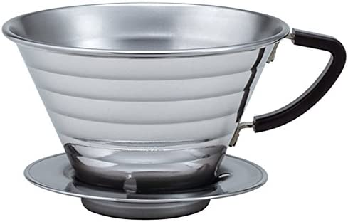

Kalita Wave Pourover Recipe

What you'll need
- Kalita Wave #185 Brewer
- Kalita #185 paper filter
- 30g Coffee: Ground medium course
- Coffee server
- Gooseneck kettle
- Water
- Scale
Steps
- Start by filling up your kettle and setting it to boil.
- Put a filter in the Kalita Wave, and place on top of a server.
- Pour hot water from kettle and rinse filter until you feel heat on the outside of the Kalita, and then discard water
- Add 30g of medium course ground coffee to the Kalita wave. Shake to level the coffee bed and zero the scale
- Start the timer on the scale and start your pour at the same time.
- Pouring is split into six separate pours of 65g of water in 15 seconds*, and allowing to drain for 15 seconds in between each pour
- Start each pour in the center. Work your way out and then back to the center, in concentric circles, saturating any dark spots of coffee on the surface.
- Coffee should finish draining around 3:30. Remove the Kalita Wave. Serve.
- Enjoy